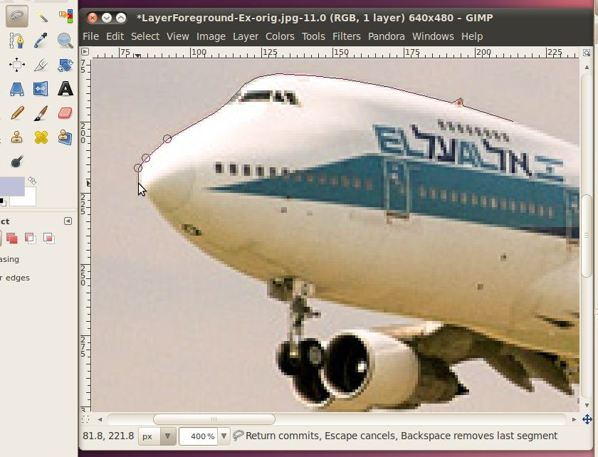
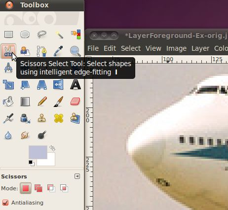
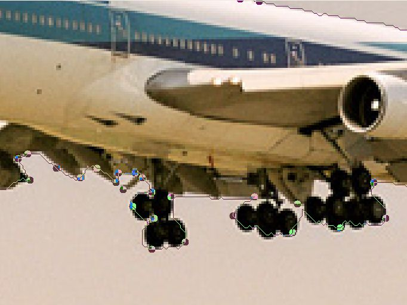
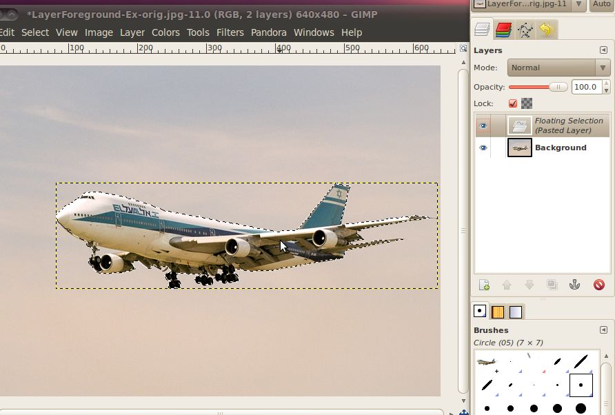
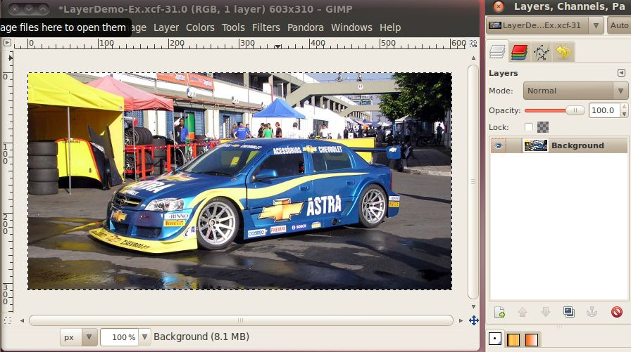
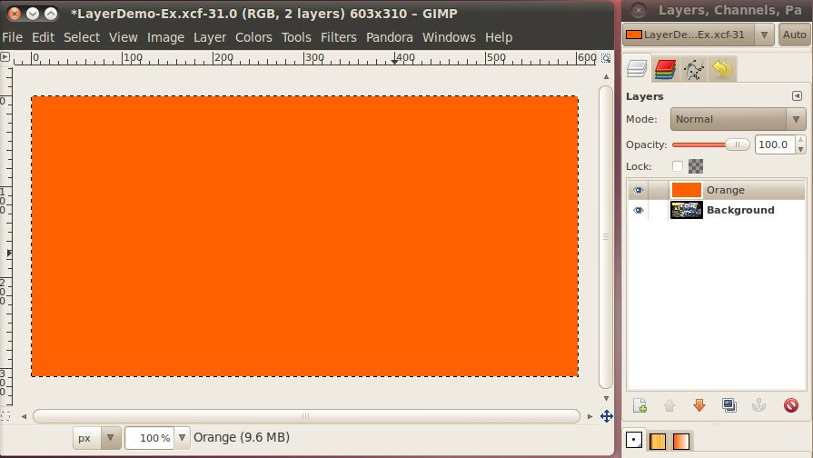
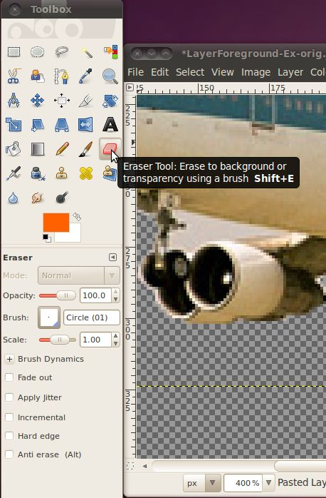
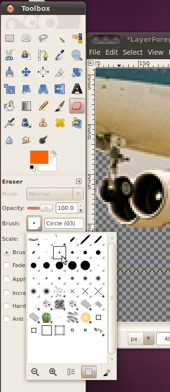
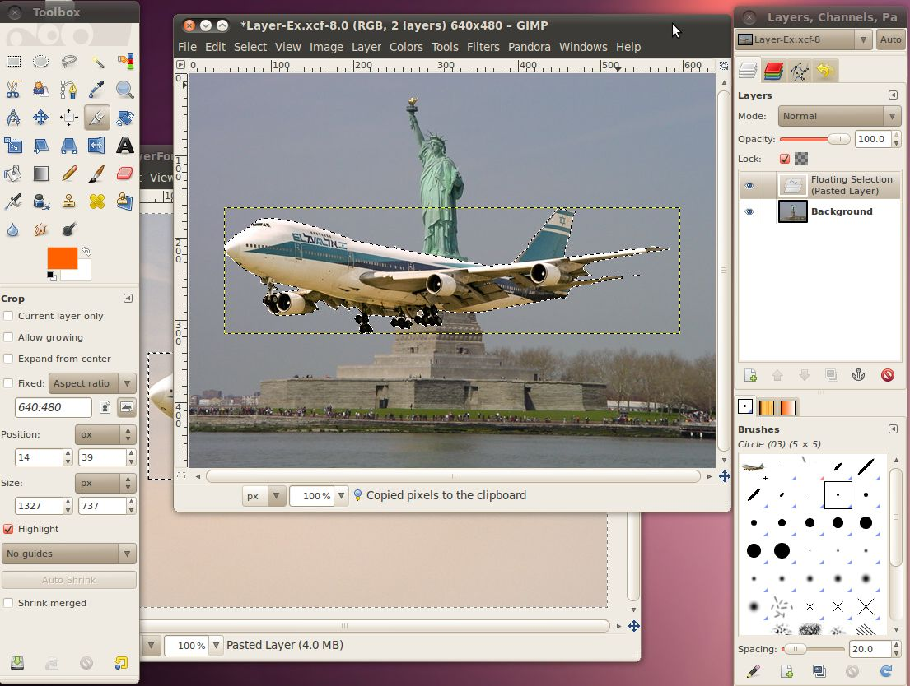
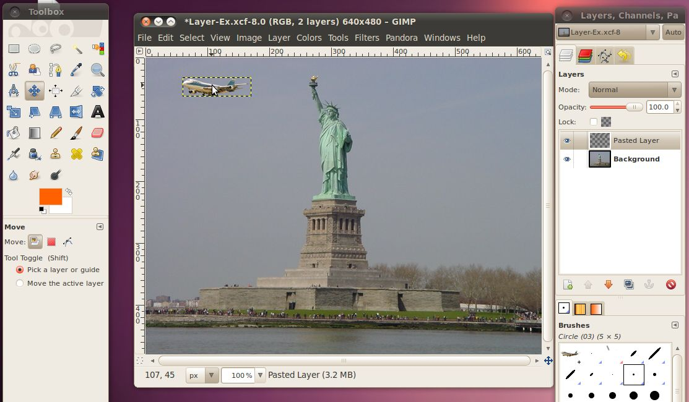

Advanced Selection and Layers
Now that we have some of the basics like
resizing and selecting down, we're going to get a little more
advanced. In this section we are going to combine two separate
pictures into one photo-like image that could conceivable been taken by
a person with a camera, but wasn't. This is a powerful tool that
can be used to deceive others by making them think that something
really happened when in actuality it didn't. Many people have
tried to deceive others with this, and many have been found, such as
Iran, trying to show that it launched four missiles when it only
launched three:
http://boingboing.net/2008/07/10/iran-you-suck-at-pho.html. As a
photo editor, it is your job to use these tools responsibly.
We're going to start by taking a picture
of an airplane
putting it into the background of a picture of the Statue of Liberty.
An Airplane

The Statue of
Liberty

Go ahead and save those to files to your disk, then open them up in the
GIMP. Since this is a more complicated project than our past
ones, we're going to save the Statue of Liberty picture into a separate
file that GIMP uses to store all the data about the project. This
is an XCF (eXperimental Computing Facility) file, and it stores all the
image data in a lossless format, as well as data about layer and
channels which we will be using for this project. To save as this
type of file, in the Statue of Liberty image go to File -> Save As,
then in the name box, change the extension from .jpg to .xcf and click
the save button. You can change the name to something completely
different or leave it the same, as long as you have the .xcf
extension. This will leave the original .jpg file alone, so you
could go back and re-open it if you need to later, without having to
re-download it.
The basic premise of how we are going to add the airplane into the
Statue photo is that we are going to select just the airplane (without
any of the sky background) from its photo, then copy and paste that
into the statue of liberty. Then we'll get on to another trick to
make it look even better.
There are several different ways to do the selection. We could do
the rectangular selection like we did in the last image, but then
you'll end up with all the sky from the airplane picture that was in
the box in the statue picture.

It doesn't look very natural. We'll need to use one of the
selection tools that will get us just
the airplane.
The most basic tool for selecting a specific area, of an arbitrary
shape is the "Free Select" or Lasso tool. This tool will let us
draw whatever shape we want on the screen, and when we connect the line
back to the start, it selects that area.
Let's pick the "Free Select" tool.

Now that we have the tool selected, we can start to outline the
airplane. It will be much easier to find the correct points to
select if you zoom in, I use 400%. Just find a spot on the border
between the airplane and the sky, and click to make your first
point. Then move the mouse cursor either clockwise or counter
clockwise to another nearby pixel that separates that airplane and the
sky. You will see a line extend between the first point and your
cursor. Adjust your cursor so that the line follows the edge
between the airplane and the sky. If you chose the complicated
area with the landing gear and engines, this could be a very short
line. On the other had, if you started on the top, this line will
be quite a bit longer.
Here's my line that started on the top, went over a little bump (an
antenna) around the cockpit and is currently at the nose:

This is going well, but when you keep going and get into the more
complex parts of the picture, this will start to get very tedious. There are so
many small parts that it would take hundreds of clicks to make lines
that accurately separate them out.
A better tool for getting all this complex stuff, is the Intelligent
Scissors tool. Let's go pick that.

The Intelligent Scissors tool is an interesting piece of equipment: it
has some features in common with the Lasso, some features in common
with the Path tool, and some features all its own. It is useful when
you are trying to select a region defined by strong color-changes at
the edges. To use the Scissors, you click to create a set of "control
nodes", also referred to as anchors or control points, at the edges of
the region you are trying to select. The tool produces a continuous
curve passing through these control nodes, following any high-contrast
edges it can find. If you are lucky, the path that the tool finds will
correspond to the contour you are trying to select.
We can start using it similarly to the Free Select tool, put down a
point on the edge of the border between the airplane and the sky.
Then move along that border and place another point. Although,
this time you won't see a line from the previous point to the cursor,
you just have to pick a point. Then when you click the computer
will try to determine what the natural border is that both the points
are on, and make a line that matches that border. If you are
still zoomed in to 400%, this will look a bit jagged, that is usually
because we're dealing with individual pixels at this level and they
don't follow a very clean border. Don't worry too much about it,
when we shrink this airplane down to put it in the statue picture, you
won't be able to tell.

Sometimes the computer won't guess correctly where the line should go,
as in this case

For some reason, it decided on a line through the engines, instead of
between the engines and the sky, but don't despair, its easy to
fix. We're just going to add another point in between those two
to
make it work out better. Any place you don't like where the
computer thought the line should go, you can easily add a new
point. Just click the existing line to make the point.

Then click and drag that new point down to the correct place for
it.

You may have to click and drag more than once for the computer to find
a line that is good enough for what you're trying to do. Also,
you don't have to add a new point to move it, you can click and drag
any point you've created to get it in a better location. The GIMP
will automatically re-draw the line when you let go.
As you go under the airplane, you probably don't have to worry about
every tiny little area. When we shrink this picture down, most of
the details won't be that easy to see.

Once you've made it all the way around the airplane,

just click inside of your selection to complete it.
Now let's see what just the area we've selected looks like. First
we're going to copy the selection by hitting the Ctrl+C key
combination. Then without doing anything to the image window we're
going to paste it back in there by hitting the Ctrl+V key
combination. Now if you look at the layers dialog, you will see
that there is a new Floating Selection listed there.

We're going to go ahead and make this into a full-fledge layer in the
image by right clicking on the Floating Selection in the layers dialog
and selecting "New Layer". Once
we're done with that, we can see both layers in the layers
dialog.

Now that we're using layers, we should probably have a quick
explanation of what they are.
It is probably easiest to think of layers as a stack of transparencies,
where the content of what is on each layer is combined together to make
up the image that we see. It is possible to have a layer that is
completely colored in, in which case nothing from the layers below that
can be seen. Likewise, it is possible to use the alpha channel to
control how transparent something is to the layers below it. For
instance if we had a bright orange (not transparent) layer on top of an
image of car, you wouldn't be able to see the car. However, if
you turned the alpha level of the orange layer down so it was more
transparent, you could see the car, but it would have an orange tint to
it.



In addition, a layer doesn't have to take up the whole area of the
image. For example, when we pasted the airplane back in to the
same picture, the layer that was created only consisted of a box big
enough to contain the selection. You can see its outline above in
the screen shots where it was pasted. Another example of layers
that aren't the size of the full image is text. Any time you use
the text tool to write on an image, it will automatically create a new
layer that the text is in, and that layer will be a rectangle just
large enough for the text to fit in to.
But back to our airplane picture. Now that we have a layer that just
contains the pasted image of the airplane, we can hide the layer with
everything in it and see just what we pasted. Just click the eye
icon next to the background image to hide it.

Now we've got the airplane that we selected (and copy/pasted) and the
default GIMP background telling us that everything else in the image is
transparent.
If we zoom in, we can see that our selection wasn't perfect.
There is a bit of sky remaining around the main landing gear, and a
triangle between the front landing gear and the wing that extends down
to the left.

This isn't going to be a problem, since it will be very small in our
final image, but we can clean it up just for the practice.
We're going to use the erase tool to go in and remove those pieces of
sky.
First let's select the erase tool.

The eraser is one of the tools that has a brush associated with
it. A brush is simply the pattern that the tool operates on, the
most common brushes are circular like, with varying sizes. For
this I would recommend using a Circle (03) brush, or possibly Circle
(01) for some of the smaller, more detailed areas. The (03) and
(01) refer to the size of the brush, so the (01) is smaller. To
select the correct brush, click the brush picture next to the word
"Brush:" in the Eraser Tool Options dialog.

Now that we have a decent brush, we can use the eraser to remove parts
of the image that we don't want. Just click once to remove the
exact amount under the brush, or click and drag around to remove
wherever you drag the brush. You'll notice that when you remove
something, you see the gray checkered background. This indicates
that this layer is now completely transparent in that spot.

Now that we've cleaned up the airplane, its time to import it into the
photo of the Statue of Liberty. To do that, first we want to
re-select the cleaned up airplane. Since that is all that is
current layer (this only works on the current layer, even if the other
layers are visible) we will only get the airplane when we simply select
everything. To select everything simply enter the Ctrl+A key
combination (also the menu Select -> All works). Now you will
see a line around the whole layer's area. Once again, we're going
to copy this by hitting Ctrl+C.
Now we have the airplane copied to the clipboard, let's bring up the
image window for the Statue of Liberty photo and paste it there using
Ctrl+V.

Woah! Its huge! If we go back and look at it, the picture
of the airplane was 640x480, and the picture of the Statue of Liberty
was the same dimensions 640x480. That means that something that
takes up half of the area in the first picture will also take up half
of the area in the second picture. It is important to understand
that the zoom level that you have each picture set to doesn't impact
how big the item you are pasting is, only the number of pixels it takes
up.
Don't worry though, we can easily re-size the airplane to make it fit
better. First, let's make the airplane that we just pasted into
the image its own layer. In the layers dialog right click on the
layer that says "Floating Selection (Pasted Layer)" and click "New
Layer...". Now we have a separate layer we can play around
with.
To re-size it, we will use the menu Layer -> Scale Layer...
Setting it to about 25% should look right. Do it just like in the
section on re-sizing pictures, change the dropdown to say "percent"
then put a value you think is good into one of the
boxes and click the "Scale" button. I have found 20-30% works
well for this image.

Now we should have an appropriately sized airplane, but it is right in
the middle of the picture, in front of the statue...not a very
realistic location for an airplane. It would be nice if we could
move it up into the sky.
To move it, we'll just use the move tool. Pick it from the toolbox

then just click inside the selection box with the airplane, and drag it
to a nice spot in the sky.

That looks pretty good, but what would really sell the picture is if it
were flying behind the statue of liberty. Anyone can copy and
paste an airplane on top of a picture, but to hide it behind
something...that's really going to take a professional!
To do this, we're going to select an area of the statue, without any of
the sky behind it, using our intelligent scissors tool. Then
we'll paste that selection into a new layer. Finally we'll put
the airplane layer in-between the background layer, and the new layer
with part of the statue.
We don't need to select the whole statue, just enough to get the
airplane behind. I think part of the arm should work well.
First, be sure to make sure the background layer is the active layer
(it will be the highlighted one) by clicking on it. Then use the
intelligent scissors tool to select the area.

When you have a good area click inside it (or hit the Enter key) to
make the area an actual selection. Then hit Ctrl+C to copy and
Ctrl+V to paste. Now you should have a floating selection
layer in the layers dialog box. Right click on it and select new
layer to make this part
of the arm a new layer.
Now we have three layers in the image, its getting tough to keep track
of which one is which. To make it easier the GIMP will let you
set the name of the layer to whatever you want. Just double click
on the layer name and type something descriptive like "arm" or
"airplane".

Okay, now we have all the pieces in place. All we have left to do
is to move the airplane behind the arm of the statue. To do this,
make the airplane layer the active one and go click on the move
tool. Now just drag the airplane over to the correct spot behind
the arm.

I'd say that looks pretty good!
Attribution
Statue of Liberty, Gavcos, http://commons.wikimedia.org/wiki/File:Statue_of_liberty.jpg,
CC-BY
El Al 747-200, Przemyslaw "Blueshade" Idzkiewicz, http://commons.wikimedia.org/wiki/File:ELAL_747-200_4X-AHQ_EPWA_24_08_2004.jpg,
CC-BY-SA
Intelligent Scissors Tool, Gimp Documentation Team, http://docs.gimp.org/2.6/en/gimp-tool-iscissors.html,
GNU FDL
Stock Car Brazil Pace Car, Morio, http://commons.wikimedia.org/wiki/File:Stock_Car_Brazil_Pace_Car.jpg,
CC-BY-SA
Chicago from UIC, Hied5, http://commons.wikimedia.org/wiki/File:Chicago_from_UIC.JPG,
CC-BY
Airplane over Autobahn, poolie, http://www.flickr.com/photos/poolie/2611727104/,
CC-BY
Chicago skyscrapers, Stephen Hanafin, http://www.flickr.com/photos/shanafin/3539282102/,
CC-BY-SA
2007/10/10 EC-HFP, Javier Pedreira, http://www.flickr.com/photos/wicho/1789307019/,
CC-BY
Frankfurt skyscrapers, Danilo Paissan, http://www.flickr.com/photos/danilopaissan/2732030140/,
CC-BY-SA
Lufthansa Boeing 737-300, daspaddy, http://www.flickr.com/photos/daspaddy/3375583143/,
CC-BY